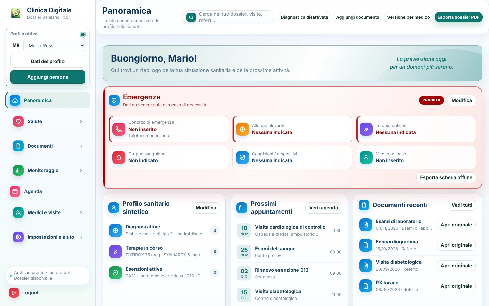
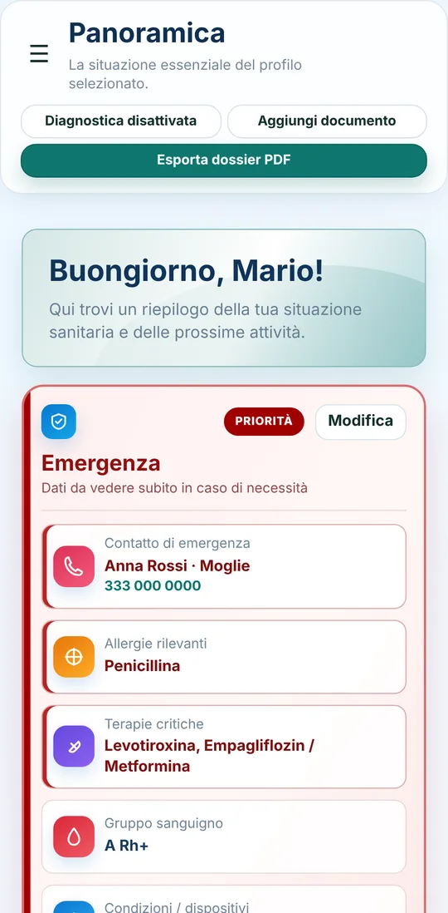
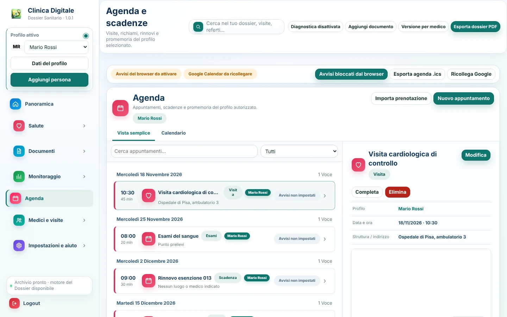

Documenti letti in automatico
Carichi un PDF o una foto: il Dossier legge il testo, riconosce valori, farmaci e diagnosi e li mette al posto giusto.
Referti, terapie, esami e appuntamenti in un unico posto, sul computer, sul telefono e sul tablet. Una modifica fatta da te la vede subito anche chi assisti con te.


Tra cassetti, email e foto sul telefono. Quando servono, non si trovano.
Orari, dosaggi, ricette da rinnovare e scorte che finiscono all'improvviso.
Controlli, esenzioni e prenotazioni di più persone da tenere insieme.
Pensato per chi gestisce la propria salute e quella delle persone care, senza competenze tecniche.
Carichi un PDF o una foto: il Dossier legge il testo, riconosce valori, farmaci e diagnosi e li mette al posto giusto.
Orari, dosaggi e promemoria di riordino. Ti avvisa prima che un farmaco finisca.
Visite, esami e scadenze di tutta la famiglia, anche su Google Calendar.
Peso, pressione, glicemia e valori degli esami nel tempo, in grafici chiari.
Il quadro clinico sempre aggiornato, con le esenzioni e le loro scadenze.
Un profilo per ogni persona, ognuno con il suo accesso e i permessi che decidi tu.
Un riepilogo ordinato da mostrare o inviare al medico in un attimo.
Allergie, terapie critiche e contatti da vedere subito quando serve.
Le modifiche si sincronizzano da sole tra i tuoi dispositivi e quelli dei familiari autorizzati. Un familiare aggiunge una visita dal suo telefono e tu la ritrovi in agenda poco dopo.


Dal browser del computer o del telefono. Nessun programma da scaricare, nessuna configurazione.
Referti, esami e ricette: il Dossier li legge e li ordina per te.
Con una password familiare temporanea, ogni persona entra con il proprio account.

Il Dossier lavora sul tuo dispositivo. Il cloud è facoltativo e riceve solo dati cifrati con una chiave che possiedi tu: nemmeno noi possiamo leggerli.
Prezzi di lancio validi fino al 14 febbraio 2027 compreso.
Personale
0 €
Per sempre
Personale evoluto
1,99 €
Prezzo di lancio, poi 4,99 €
Famiglia
2,99 €
Prezzo di lancio, poi 9,99 €
No. Il Dossier si apre dal browser. Se vuoi, puoi aggiungerlo alla schermata del telefono o del computer come un'app.
Sul tuo dispositivo, protetti dal tuo accesso. Se attivi il cloud, sul tuo spazio MEGA arriva solo una copia cifrata con la tua chiave.
Sì, con il piano FULL: un profilo per ogni persona e, per gli adulti, un accesso personale con i permessi che scegli tu.
Ricolleghi un altro dispositivo e ritrovi tutto dalla copia cifrata. Senza password e codice nessuno può aprire il tuo Dossier.
Sì. È pensato per persone non tecniche: comandi chiari, nessuna configurazione complicata e pagine che si adattano anche ai caratteri ingranditi del telefono.
Bastano pochi minuti per iniziare. Il piano personale è gratuito.
Inizia gratis